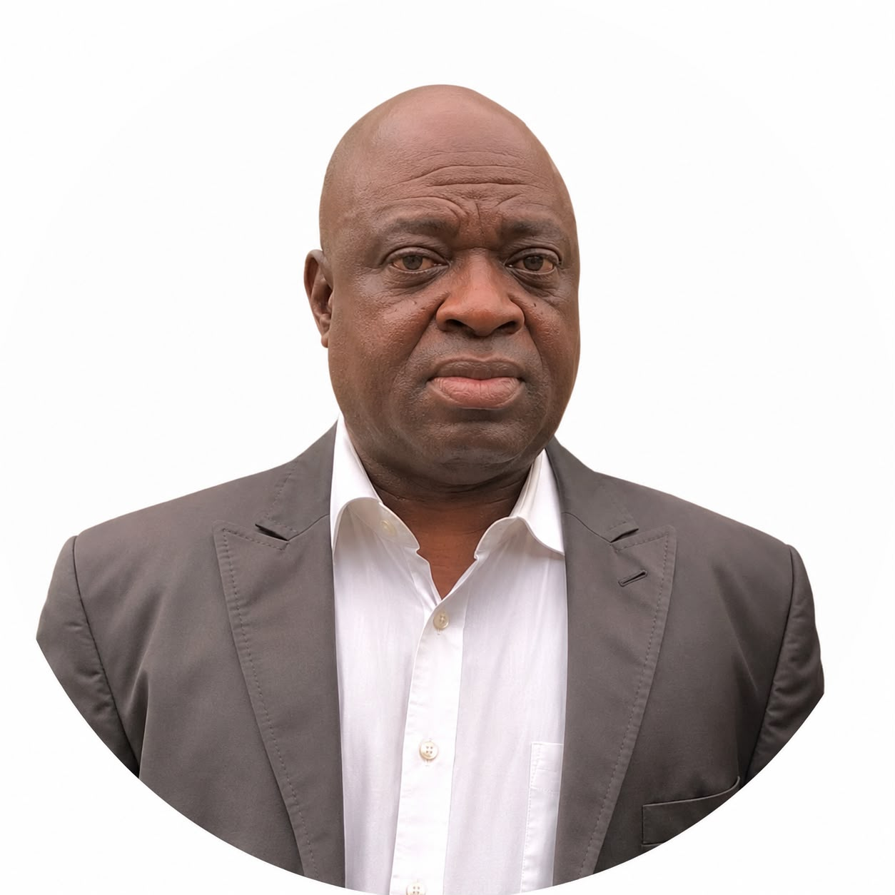
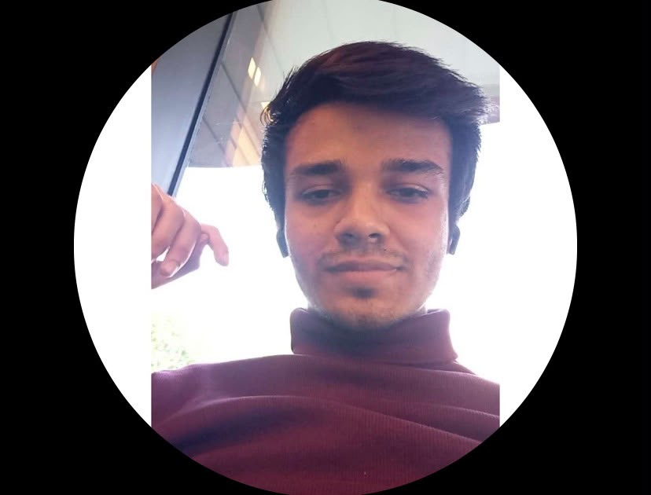
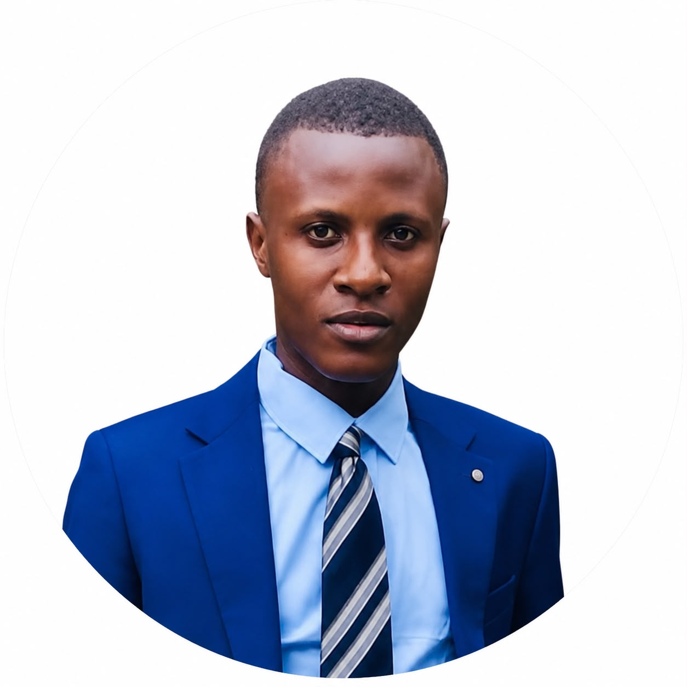

Gouvernance & Équipe de l'Institut
Notre Mission
L'Institut Théophile Obenga des Relations Internationales est un think tank indépendant consacré à la recherche, à l'analyse stratégique et à la diplomatie en Afrique centrale.
Cliquez sur les profils de l'équipe pour découvrir leurs qualifications et expertises détaillées.
Conseil d’administration

Ignace Lokouako 🔍
Président de l'Institut Théophile Obenga

Andronique Okia 🔍
Directeur administratif et financier, Direction générale du contrôle des marchés publics.
Garrec Milandou 🔍
Directeur, Union Africaine et intégration régionale, Ministère des affaires étrangères (République du Congo)

Dr Castro Boueya 🔍
Docteur en Droit international humanitaire.
Direction exécutive
Directeur d’études : Ignace Lokouako 🔍
Direction de la recherche et de la prospective politique.
Smart Dinga 🔍
Vice-Président, Directeur du contenu numérique
Entrepreneur, traducteur et interprète
Malraux Moranga 🔍
Vice-Président, Directeur financier
Entrepreneur et économiste
Jourdain Nkossi 🔍
Vice-Président, Directeur du développement
Juriste et spécialiste en Droit de la famille
Chercheurs associés

Ahsan Ali 🔍
Chercheur associé
Analyste politique et spécialiste en relations internationales (Afrique du Nord et Moyen-Orient)

Joce Passy 🔍
Spécialiste en relation Sino-Congolaise, Professeur de langue chinoise et interprète français-mandarin.

Ibrahim H. Yunus 🔍
Chercheur et expert en relations internationales.

Brunel Kalekina 🔍
Membre ordinaire, Professeur de langue anglaise